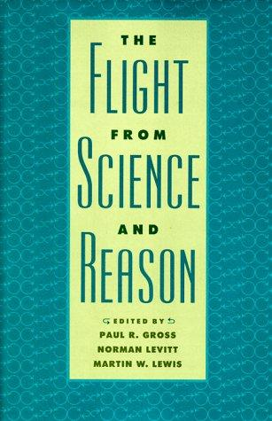
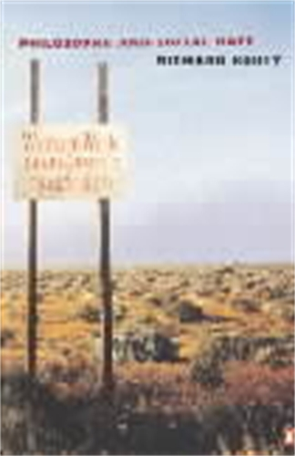
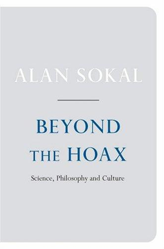
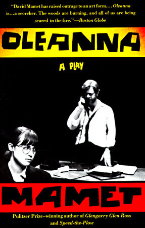
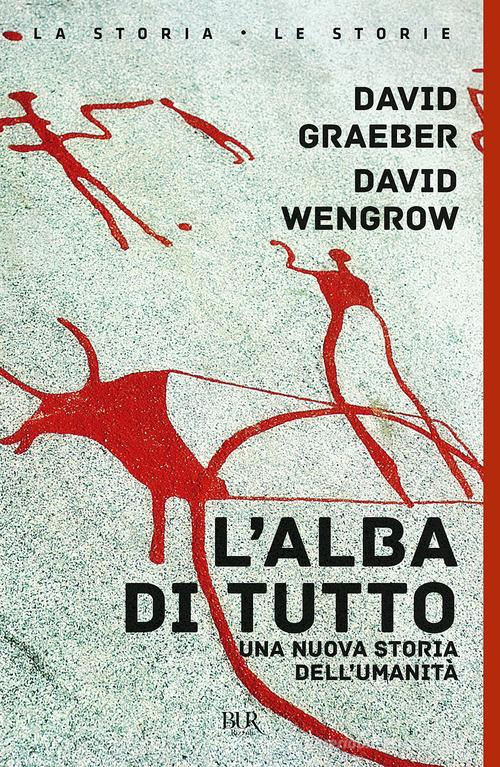

54:27 · 15 OPERE
La notte dello spirito è anche la notte della democrazia.
Il filo del discorso
Il blocco temporaneo del canale è il punto di partenza di una riflessione sulla possibilità di discutere pubblicamente e sul valore della verità. Il relatore propone un osservatore immaginario che confronti le epoche, usa la fantascienza e il cinema come termini di paragone e collega la moderazione delle piattaforme a una più ampia crisi culturale. Una raccolta sulle fughe dalla scienza e dalla ragione, un saggio di Susan Haack e i libri di Sokal guidano la polemica contro il disinteresse per i fatti che attribuisce a una parte della cultura accademica. Il discorso passa poi al libero arbitrio, ai conflitti universitari e alla lettura della storia, con riferimenti a Mamet, Graeber e Wengrow e alla statua di Jefferson. La conclusione propone lettura, discussione e verifica razionale come strumenti di resistenza. La scheda distingue questa interpretazione politica dai documenti giuridici, dagli aneddoti non verificabili e dalle generalizzazioni sulla storia.
I libri nel discorso

Idiocracy
Note sul riferimento
Immagine promozionale del film · distribuzione digitale: Film statunitense del 2006, regia di Mike Judge, con Luke Wilson e Maya Rudolph, distribuito da 20th Century Fox. Immagine promozionale autentica della distribuzione digitale; non una copertina libraria. La scheda statunitense distingue il 2006 di uscita dal copyright grafico del 2005.
Grafica ufficiale con il titolo Idiocracy e il cast, vista integralmente nella scheda Apple TV. Non è una prova delle tesi sociologiche del relatore.
Idiocracy è nominato nel confronto fra due società immaginarie.

Metropolis
Note sul riferimento
Edizione homevideo: Masters of Cinema: Film tedesco UFA, prima 10 gennaio 1927. Copertina Blu-ray Eureka Masters of Cinema della ricostruzione 2010, 150 minuti dichiarati dal distributore; musica di Gottfried Huppertz. Non è identificata la copia posseduta dal relatore.
Copertina autentica Eureka intera, vista: custodia Blu-ray, edifici verticali e titolo rosso Metropolis. Regia e anno verificati nei crediti separati; non è la copertina del romanzo, né una locandina originale del 1927.
Metropolis di Fritz Lang, film degli anni Venti, esplicito.
An Essay on the History of Civil Society
Identificazione probabile
Note sul riferimento
Copertina: Opera originale del 1767. Copertina Cambridge Texts in the History of Political Thought, a cura di Fania Oz-Salzberger, edizione cartacea del 1 febbraio 1996, 322 pagine, ISBN 9780521447362. Il 2012 indicato nella pagina riguarda la pubblicazione digitale.
Immagine autentica dell’opera, controllata visivamente; l’edizione di riferimento non è attribuita al filmato.
Ferguson, the civil society; testo consigliato.

FF.SS. – Cioè: …che mi hai portato a fare sopra a Posillipo se non mi vuoi più bene?
Note sul riferimento
Grafica di presentazione del film · RaiPlay: Film italiano del 1983, regia di Renzo Arbore. Grafica di presentazione autentica RaiPlay con titolo e personaggi; non una copertina di libro e non Il pap’occhio, diverso film dello stesso regista.
Immagine intera della scheda Rai, con il titolo riconoscibile. Il riferimento alla battuta resta da collazionare sul film; non si presenta la grafica come il fotogramma della scena citata.
Arbore, FFSS, battuta sulla parentela con Ciriaco De Mita.

Costituzione degli Stati Uniti d’America
Note sul riferimento
Copertina della raccolta: Testo firmato il17settembre1787. Per l’immagine si usa la raccolta Penguin Classics The Federalist Papers, ISBN 9780140444957, che dichiara di includere il testo della Costituzione; non è una fotografia della pergamena originaria.
Copertina autentica di The Federalist Papers: la descrizione editoriale attesta che la raccolta comprende il testo completo della Costituzione. Non è il frontespizio costituzionale del 1787 e Hamilton, Madison e Jay non sono presentati come unici autori del documento.
Costituzione e primo emendamento nel discorso sulla azione statale.

The Flight from Science and Reason
Note sul riferimento
Copertina: Annals of the New York Academy of Sciences, volume 775, XI e 593 pagine. Atti della conferenza di New York del 31 maggio–2 giugno 1995. Wellcome distingue la pubblicazione del 1996 dalla ristampa distribuita da Johns Hopkins University Press nel 1997, ISBN 9780801856761, cui è associata l’immagine. Il sito NYAS e alcuni metadati della rivista riportano invece 1995: la discrepanza non viene nascosta.
Immagine autentica dell’opera, controllata visivamente; l’edizione di riferimento non è attribuita al filmato.
The Flight from Science and Reason, 1996; curatori nominati a1786.

Imposture intellettuali. Quale deve essere il rapporto tra filosofia e scienza?
Note sul riferimento
Copertina: Garzanti · Saggi blu · 1999 · traduzione di Fabio Acerbi e Monica Ugaglia
Immagine autentica dell’opera, controllata visivamente; l’edizione di riferimento non è attribuita al filmato.
Imposture intellettuali di Alan Sokal; il contributo ne accosta la data alla beffa del 1996.

Transgressing the Boundaries: Towards a Transformative Hermeneutics of Quantum Gravity
Identificazione probabile
Note sul riferimento
Frontespizio del preprint dell’articolo parodico: Social Text · 46/47, pp. 217–252 · 1996 · immagine del preprint 1994, revisione 1995
Frontespizio autentico del preprint dell’autore: 28 novembre 1994, revisione 13 maggio 1995. Non è la copertina di un libro né la prima pagina della veste tipografica di Social Text. Il testo è una parodia dichiarata, non un articolo da usare per apprendere fisica.
Il saggio-beffa pubblicato nel 1996, distinto dal libro successivo.
Concern for Truth: What It Means, Why It Matters
Note sul riferimento
Raccolta The Flight from Science and Reason · contiene il saggio di Haack: In The Flight from Science and Reason, Annals of the New York Academy of Sciences 775, pp.57–63, 1996 nella bibliografia dell’autrice, DOI 10.1111/j.1749-6632.1996.tb23127.x. Immagine della ristampa della raccolta del 1997, non una copertina autonoma del saggio.
La copertina riporta il titolo della raccolta e i curatori. Titolo e autrice del saggio sono verificati nel testo, non ricavati dalla copertina.
Susan Haack, preoccupazione per la verità, cosa significa e perché è importante.

Trotsky and the Wild Orchids
Identificazione probabile
Note sul riferimento
Copertina della raccolta Philosophy and Social Hope, Penguin 1999, contenente Trotsky and the Wild Orchids; non copertina autonoma del saggio né del fascicolo Common Knowledge 1992.: Philosophy and Social Hope, Penguin, 26 agosto 1999, ISBN 9780140262889; raccolta dichiarata da UNLV come fonte del testo ripubblicato
Nel passaggio: seconda frase di Rorty, tradotta come non se ne fa nulla di nozioni quali verità oggettiva, con tentativo di lettura inglese. Titolo non pronunciato; identificato dalla nota 7 di Haack e dal testo primario ripubblicato UNLV.

Beyond the Hoax: Science, Philosophy and Culture
Note sul riferimento
Copertina: Oxford University Press, 2008, rilegato, ISBN 9780199239207. Oxford indica 488 pagine; il sito dell’autore ne indica 486 e altre descrizioni separano preliminari e testo. La copertina associata al medesimo ISBN è riscontrata visivamente, senza attribuire al video una particolare tiratura.
Immagine autentica dell’opera, controllata visivamente; l’edizione di riferimento non è attribuita al filmato.
Altro testo successivo di Sokal, Oltre la beffa.

Encomio di Elena
Note sul riferimento
Copertina: La Vita Felice, Piccola Biblioteca della Felicità 29, 2021, a cura di Riccardo Pezzano, testo greco a fronte, 64 pagine.
Immagine autentica dell’opera, controllata visivamente; l’edizione di riferimento non è attribuita al filmato.
Encomio di Elena di Gorgia da Lentini.

Oleanna
Identificazione probabile
Note sul riferimento
Copertina: Dramma del 1992. Copertina dell’edizione Vintage del 4 maggio 1993, 96 pagine, ISBN 9780679745365. È il testo teatrale, distinto dal film successivo; il catalogo editoriale descrive il conflitto di potere fra John e Carol senza imporre la interpretazione univoca proposta nel video.
Immagine autentica dell’opera, controllata visivamente; l’edizione di riferimento non è attribuita al filmato.
David Mamet, storia anni Novanta di studentessa e professore: titolo non pronunciato.

L’alba di tutto. Una nuova storia dell’umanità (The Dawn of Everything)
Note sul riferimento
Copertina: Originale inglese del 2021. Copertina BUR Rizzoli, La storia · Le storie, 16 marzo 2023, traduzione di Roberta Zuppet, ISBN 9788817180924. L’editore indica 736 pagine; il catalogo Librinlinea ne descrive 727. La copertina del 2023 non è attribuita alla prima edizione americana del 2021.
Immagine autentica dell’opera, controllata visivamente; l’edizione di riferimento non è attribuita al filmato.
L’alba di tutto, una nuova storia dell’umanità, David Graeber e David Wengrow.

Dichiarazione d’indipendenza degli Stati Uniti d’America
Identificazione probabile
Note sul riferimento
Facsimile: incisione di Stone del 1823: Documento del 4 luglio 1776 · incisione di William J. Stone del 1823
Riproduzione documentaria dell’incisione di Stone del 1823 conservata dai National Archives. Non è la pergamena originale del 1776, né la copertina di un libro.
Jefferson e la formula all men are created equal.
Fonti e approfondimenti (15)
- constitution.congress.gov ↗
- digital-strategy.ec.europa.eu ↗
- identity.wellcomecollection.org ↗
- physics.nyu.edu ↗
- plato.stanford.edu ↗
- vaers.hhs.gov ↗
- winstonchurchill.hillsdale.edu ↗
- cambridge.org ↗
- einstein-online.info ↗
- napoleon.org ↗
- nyc.gov ↗
- parliament.uk ↗
- penguinrandomhouse.com ↗
- researchgate.net ↗
- who.int ↗